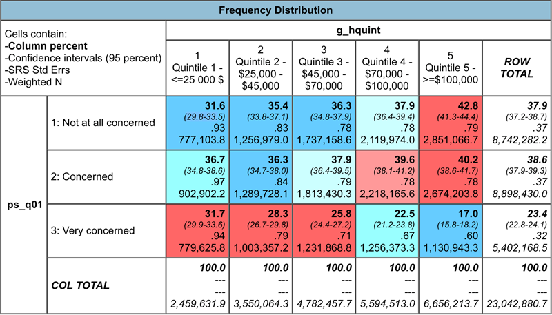
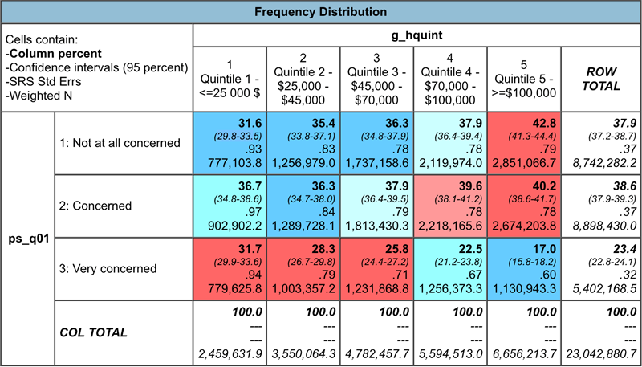

Online Banking Use and Age/Income Relationship
Online Banking Transactions and Age:
There is a strong positive relationship between the amount of concern regarding performing banking transactions over the internet and the age of the respondent. In other words, as the respondents age increases, their concern for conducting online banking transactions also increases.
This frequency distribution table shows that respondents in the two age categories 16 to 24 and 25 to 34, or columns one and two, have “larger than expected” numbers that fall under the, “not at all concerned about banking online”, category.
Furthermore, the graph shows that these youngest two age categories are nearly identical in the three levels of concern (Not at all concerned, Concerned, and Very concerned).
As hypothesized, the two oldest age ranges, 55 to 64 and 65 & older, have the highest levels of very concerned respondents. Interestingly, the 55 to 64 age range has the highest percentage of respondents that were either concerned or very concerned as opposed to the oldest age range, 65 & older.
The data in this graph and frequency distribution further reinforce the hypothesis that older users of the internet are less trusting of performing transitions online.
By isolating the concern for online banking transactions variable, we are able to view various other numerical information such as the
- Mean: 1.86
- Standard Deviation: 0.77
- Variance: 0.59
Using this information, we are able to calculate the z-score for any given ‘banking transaction’ value within the dataset. The z-score, otherwise known as the standardized value, indicates the number of standard deviations a data value is from the mean.
For example, to calculate the z-score for the concern value 3, which represents the very concerned, we can formulate that this variable has a z-score of 1.48. This means that the concern value 3 is 1.48 standard deviations away from the mean of 1.86.
SDA@Chass CIUS, 2012 - Person File, Variables ps_qu01 by gcagegr6
SDA@Chass CIUS, 2012 - Person File, Variables ps_qu01
Online Banking Transactions and Income:
The comparison between banking transactions and income shows a weak positive relationship in both the “Not at all concerned” and “Concerned” categories as income increases.
Furthermore, the graph displays a strong negative relationship between income and performing online banking transactions. As the household income increases, the user’s concern for conducting online banking transactions decreases, contrary to our hypothesis.
The frequency distribution table shows that there are a larger than expected number of those who have a household income of $100,000+ and are not at all concerned with online banking transactions while showing that there are less than the expected number of those who are not at all concerned with online banking transactions that are in the lower income quintiles.
This suggests that the households making $100,000 or more are less concerned with the risks of performing online banking transactions because they are wealthy, while households making less are more concerned with the risks of performing online banking transactions since they are less wealthy and cannot afford to lose their money.
When isolating the banking transactions variable, viewing the summary statistics provides useful insights.
The concern for performing online banking transaction variable would represent a discrete random variable because it is composed of categories and each category has a numerical value assigned to it.
The low standard deviation value of 0.77 means that the data points are relatively close to the mean.
The variance measures the spread between data points and the mean. A low variance number of 0.59 means that the data points are spread closely to the average.
A coefficient of variation (Coef var) value of 0.42 means that the standard deviations is about 42% the size of the mean.
 

SDA@Chass CIUS, 2012 - Person File, Variables ps_q01 by g_hquint
SDA@Chass CIUS, 2012 - Person File, Variables ps_qu01